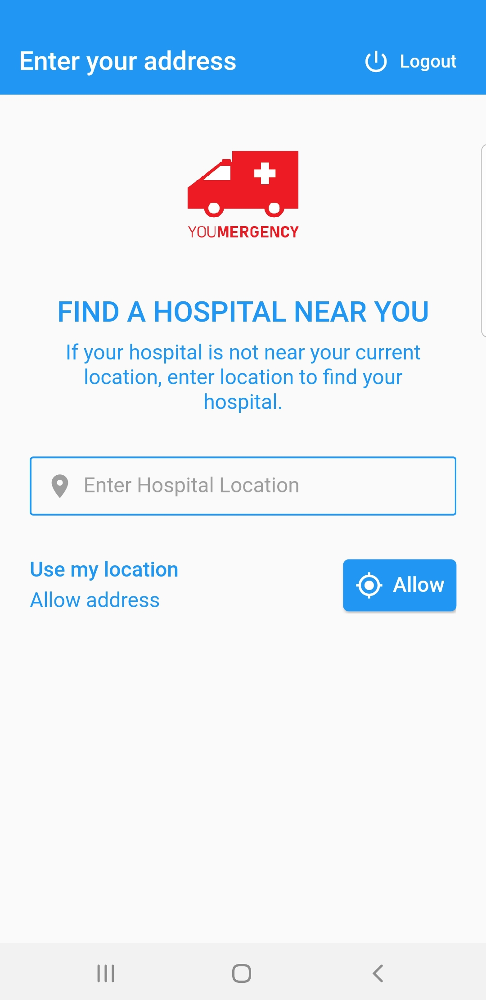
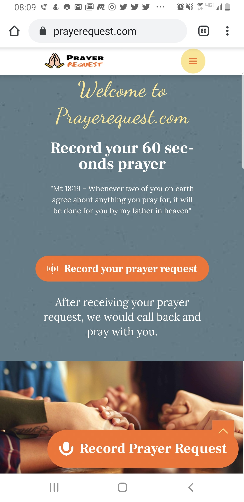
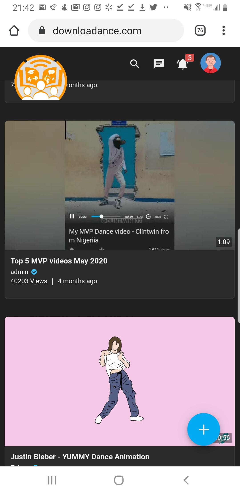
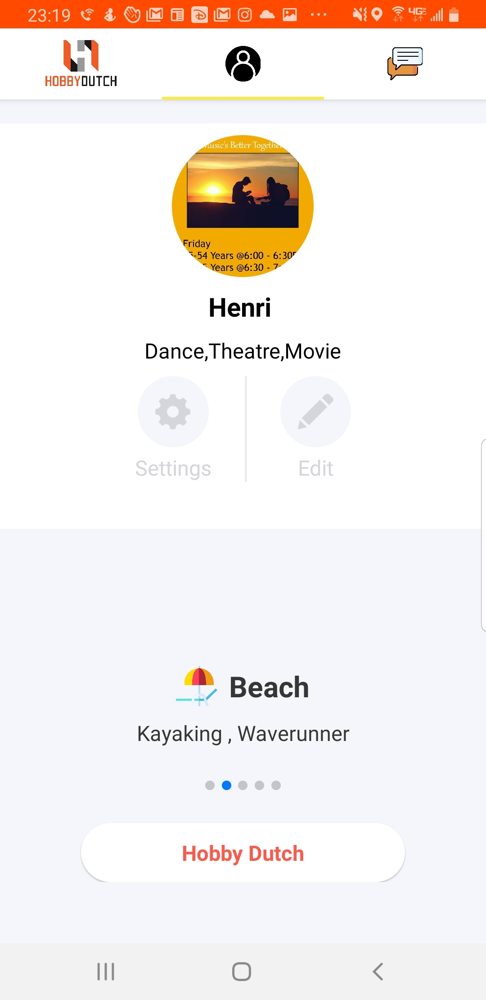

I spearheaded this project and built an emergency app. I worked with a team that included two app developers, one web developer, one software engineer and two designers. My goal was to create a simpler way for the elderly to get an ambulance during crisis. Our stack included Flutter for the app and html/css for the website. I learnt how to use jira, confluence, gitlab, create user interview surveys and work remotely through slack.

I created the wireframe for this website and worked with a web developer. When everyone was praying about new year resolutions, I heard people at Church share their stories about problems they are facing. I wanted to connect the people out there who need encouragement and the people in Church who can pray for them. We used a Google Voice recorder API to accept request and wordpress admin to follow up. I learnt that getting volunteers to call back and pray was not an easy task.

I partly developed this website for dancers. During my teen years, I was a team leader of a dance crew, so I collaborated with a web developer to build a platform to financially support dancers affected by COVID19 through community contest. The languages used includes Javascript, php and node.js. I learnt the importance of giving back and how to manage content.

I took an android development course and developed this app for singles to video chat for free. The goal was to help people stay sane from the isolation that came with COVID19 pandemic. I collaborated with a web developer, app developer and iOS developer. The languages used includes React Native for the app and wordpress for the website. I learnt that building a native mobile app from scratch is better. Git Link